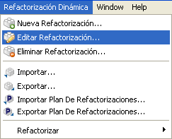

Editar Refactorizaciones
Editar Refactorizaciones
En esta secci�n aprender� c�mo modificar una refactorizaci�n din�mica existente del conjunto
de refactorizaciones disponibles.
- Seleccione la opci�n de menú Refactorizaci�n Din�mica > Editar
Refactorizaci�n... en Eclipse para iniciar el asistente de edici�n.

Opci�n "Editar Refactorizaci�n..."
- Se mostrar� una lista con las refactorizaciones din�micas disponibles. Seleccione la que desea modificar.
Seg�n seleccione refactorizaciones en la lista de la izquierda, ver� en la parte derecha un breve resumen
con la descripci�n, la motivaci�n y la imagen asociadas a la refactorizaci�n seleccionada.

Refactorizaciones disponibles
- Una vez que haya seleccionado una refactorizaci�n para editar, deber� recorrer paso a paso un asistente
que le guiar� a trav�s del proceso de edici�n. El asistente es id�ntico al utilizado en el proceso de
creaci�n de refactorizaciones, con la diferencia de que ahora los campos aparecer�n ya completados con
la informaci�n asociada a la refactorizaci�n que se est� editando.
Vea la secci�n Crear Refactorizaciones para obtener informaci�n detallada
acerca de c�mo completar los campos del asistente.
- Llegado el quinto paso, pulsar el bot�n
Finalizar guardar� los cambios que se hayan efectuado
en la refactorizaci�n. Un mensaje de confirmaci�n le informar� si la refactorizaci�n se ha guardado con �xito..

Refactorizaci�n modificada